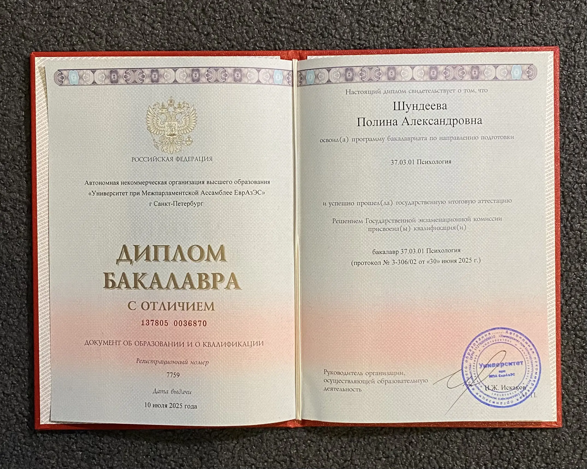
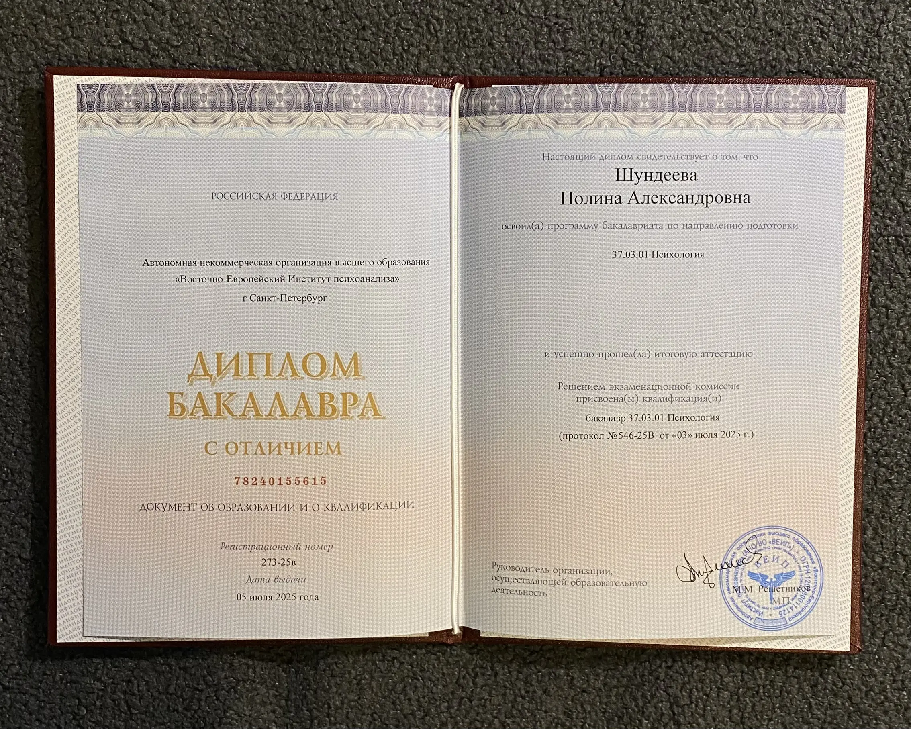
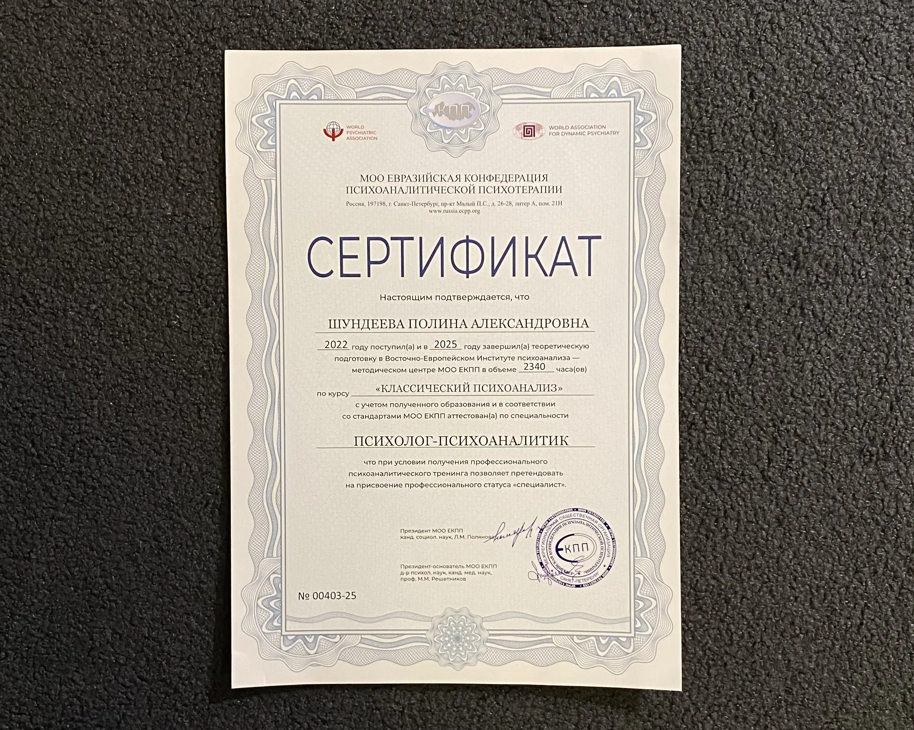
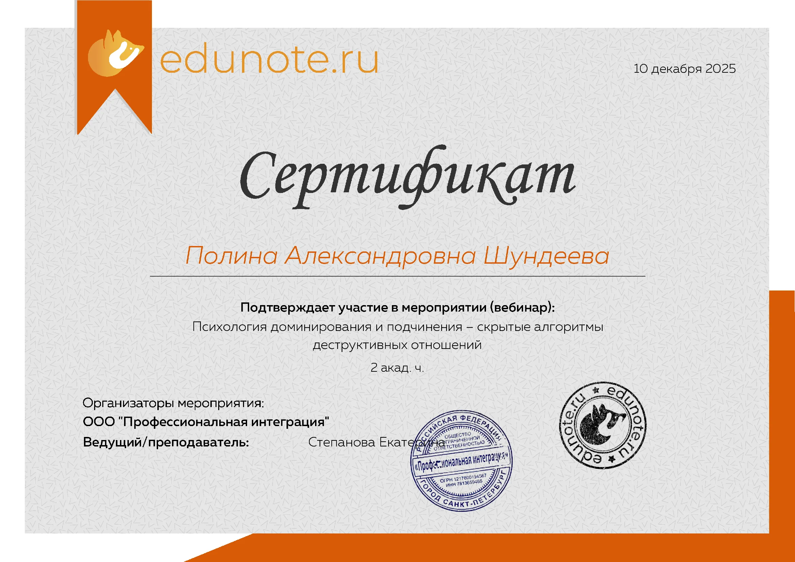
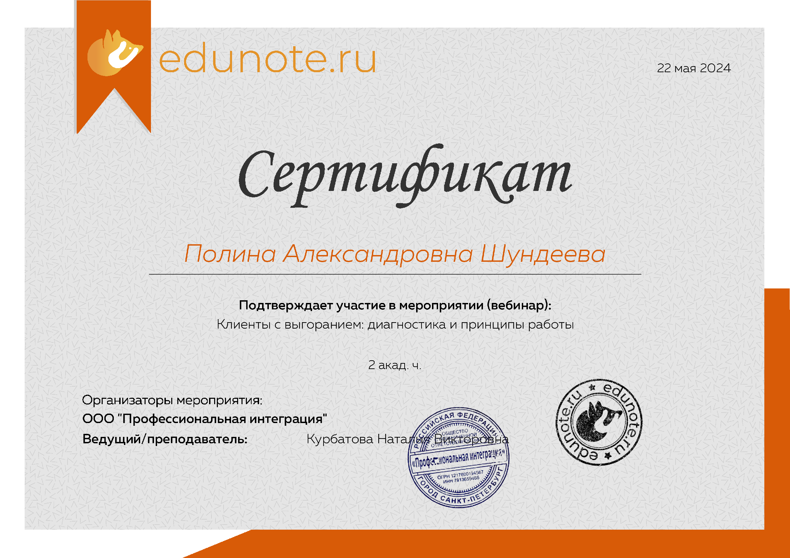
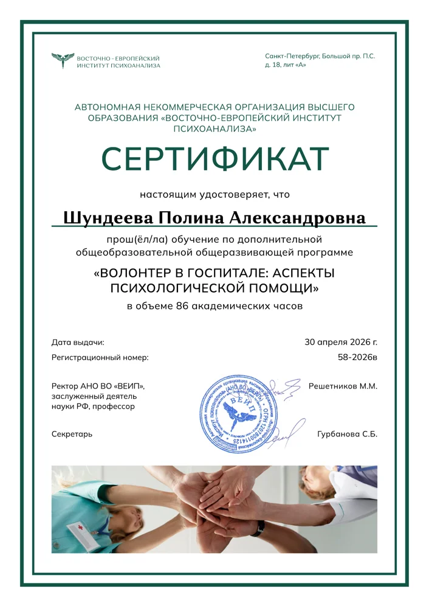

Как проходят сессии
1 час - 3 000 ₽
Работа один на один, полная конфиденциальность
Вопросы в чате между сессиями (в разумных пределах)
Оплата до начала: карта, перевод или USDT.
Помогаю выдерживать реальность и менять сценарии, которые мешают жить свободно. Психодинамика: глубоко, бережно, без магии.
Вы можете прийти ко мне с любыми переживаниями, которые мешают вам жить полно и свободно. Например:
"У меня всё есть, но я не чувствую счастья". Апатия, ощущение пустоты, ненависть к себе, чувство, что живёшь на автопилоте.
Развод, потеря близкого, переезд, увольнение. Ощущение, что "я не вывожу". Нужна опора
Одни и те же сценарии: холодные партнёры, друзья, которые вас используют, невозможность удержать близость. "Меня терпят, а не любят"
Фоновое напряжение, которое не отпускает. Страх, что "что-то случится". Недоверие к миру и людям. Невозможно расслабиться
"Не знаю, чего хочу". Живёте желаниями других, забыли, что нравится вам. Стыдно говорить "нет".
Вы всегда в тонусе, контролируете всё, но внутри — пустота. Чувство вины за отдых. "Я должна ещё больше стараться"


Восточно-Европейский институт психоанализа, психоанализ 2022 - 2025 гг" class="w-full cursor-pointer edu-img" data-caption="Диплом бакалавра Восточно-Европейский институт психоанализа, психоанализ 2022 - 2025 гг">



Я работаю в психодинамическом подходе — это про поиск причин, а не "техники от тревоги". Мы будем разбираться, ПОЧЕМУ это происходит, а не только КАК с этим справиться.
Сама в терапии более 7 лет. Знаю, как сложно выдерживать собственные процессы, как страшно доверять психологу, как хочется сбежать, когда начинаются изменения.
Моя задача — не "чинить" вас (вы не сломаны), а создать безопасное пространство, где можно быть любой: злой, испуганной, "неудобной".
Работа один на один, полная конфиденциальность
Вопросы в чате между сессиями (в разумных пределах)
Оплата до начала: карта, перевод или USDT.
Вы рассказываете о запросе, я задаю вопросы
Определяем цели и план, понимаем, подходим ли друг другу, и как будут проходить сессии.
В психоанализе нет "правильных" и "неправильных" мыслей. Моя задача - не судить, а понимать.
Вы можете рассказывать о чём угодно: злость на маму, зависть к подруге, "ужасные" фантазии - здесь безопасно.
Понимаю это чувство. Но тревога и выгорание стоят дороже: бессонница, больничные, потерянные возможности, конфликты в семье.
Терапия - не роскошь, а инвестиция в качество жизни. 3000₽ - это 2-3 похода в кафе или одна покупка одежды.
Если сейчас действительно сложно - можем обсудить периодичность встреч (раз в 2 недели вместо еженедельно)
Психологи разные. Возможно, вам не подошёл подход (КПТ/коучинг/гештальт) или не было контакта с конкретным специалистом.
Психоанализ - это не "техники от тревоги", а глубинная работа с причинами. Мы ищем, ПОЧЕМУ это происходит.
Первая встреча - знакомство. Вы поймёте, подхожу ли я вам
Это частый страх. И он обоснован: иногда в терапии действительно бывает больно (как при лечении раны - сначала обработать, потом заживёт).
Но мы не будем "раскапывать" насильно. Психика сама регулирует, насколько глубоко готова идти. Моя задача - выдержать ваши чувства, а не сделать больнее
КПТ отлично работает с симптомами (паническая атака, фобия). Но если проблема повторяется (одни и те же партнёры, конфликты, чувство пустоты) - значит, причина глубже.
Психоанализ - это про "почему", а не только "как справиться". Мы меняем сценарии, которые формировались годами
Мы договариваемся о времени, встреча длится 1 час и проходит онлайн в формате видеозвонка
(через SaluteJazz или
Telemost).
Я попрошу вас заранее позаботиться о том, чтобы у вас было спокойное, тихое и комфортное место на время встречи.
Если вы уже понимаете, зачем хотите обратиться к психологу — расскажете об этом.
Если нет, мы попробуем вместе разобраться.
В начале я спрошу: «Что вы бы хотели обсудить сегодня?» — и попрошу вас говорить всё, что приходит в голову.
Это будет ваше безопасное пространство для обсуждения любых тем.
Моя работа основана на психоаналитическом подходе.
Это значит, что мы будем исследовать повторяющиеся ситуации и чувства,
разбираться с внутренними конфликтами, которые вызывают тревогу или напряжение,
учиться понимать свои эмоции и желания, даже самые трудные и противоречивые,
находить новые способы строить отношения и быть в контакте с собой,
работать с травматическим опытом, который продолжает влиять на настоящее.
Главная цель — не только облегчить боль или снять симптомы,
но и показать, что такое интерес к себе,
помочь лучше понять себя и почувствовать опору внутри.
Чаще всего встречи проходят раз в неделю. Это помогает поддерживать ритм и постепенно продвигаться в работе. Но частота может быть другой и зависит от ваших потребностей и возможностей. Мы обсудим это вместе и выберем комфортный для вас вариант.
Да, полностью. Всё, что мы обсуждаем, остаётся только между нами. Конфиденциальность — один из базовых принципов моей работы.